산업안전기사 (2006-05-14 기출문제)
1과목: 안전관리론
1. 안전표지의 종류와 분류가 맞는 것은?
- 화기금지 : 금지표지
- 낙하물 경고 : 지시표지
- 안전모 착용 : 안내표지
- 세안장치 : 경고표지
(정답률: 78%)

2. 안전태도교육의 순서를 보기에서 골라 올바르게 나열한 것은?
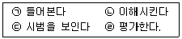
- (ㄱ) → (ㄴ) → (ㄷ) → (ㄹ)
- (ㄴ) → (ㄱ) → (ㄷ) → (ㄹ)
- (ㄷ) → (ㄴ) → (ㄱ) → (ㄹ)
- (ㄱ) → (ㄷ) → (ㄴ) → (ㄹ)
(정답률: 61%)
3. 하인리히의 사고예방 원리 단계 중 작업분석, 안전점검 및 안전진단, 사고조사 등은 어느 것과 가장 관계가 깊은가?
- 안전 조직
- 사실의 발견
- 분석평가
- 시정책의 적용
(정답률: 59%)
4. 다음 중 프로그램 학습법의 단점이 아닌 것은?
- 개발된 프로그램의 변경이 용이하다.
- 교육 내용이 고정화되어 있다.
- 학습에 많은 시간이 걸린다.
- 집단 사고의 기회가 없다.
(정답률: 78%)
5. 조직의 지도자들이 부하직원들을 승진시킬 수 있고 봉급을 인상해주는 등의 능력이 있으므로 통제가 가능한 권한은?
- 위임된 권한
- 합법적 권한
- 강압적 권한
- 보상적 권한
(정답률: 70%)
6. Heinrich 재해구성비율 중 무상해사고가 600건이라면 사망 또는 중상은 몇 건 발생 되겠는가?
- 1
- 2
- 29
- 58
(정답률: 65%)
7. 바이오리듬(Biorhythm) 가운데 판단력, 추리력과 가장 관계가 깊은 리듬은?
- 지성리듬
- 감성리듬
- 육체리듬
- 생활리듬
(정답률: 73%)
8. McGregor의 이론 중 Y 이론의 관리처방에 해당되지 않는 것은?
- 분권화와 권한의 위임
- 목표에 의한 관리
- 상부 책임제도의 강화
- 비공식적 조직의 활용
(정답률: 56%)
9. 인간의 의식수준 단계 중 생리적 상태가 피로하고 단조로울 때 해당되는 것은?
- PhaseⅠ
- PhaseⅡ
- PhaseⅢ
- PhaseⅣ
(정답률: 47%)
10. 다음 중 방진마스크의 선정기준으로 옳은 것은?
- 사용 용적(유효공간)이 커야 한다.
- 흡기 및 배기저항이 낮아야 한다.
- 배기저항이 높은 것일수록 좋다.
- 분진 포집효율(여과효율)이 낮은 것일수록 좋다.
(정답률: 70%)
11. 안전관리조직에 대한 사항 중 Line-staff 혼합형에 해당되는 것은?
- 조언이나 권고적 참여가 혼돈된다.
- 안전에 대한 정보가 불충분하다.
- 안전과 생산은 별도로 생각한다.
- 안전책임과 권한이 생산라인에는 없다.
(정답률: 80%)
12. 무재해 운동 추진의 3요소(기둥)가 아닌 것은?
- 최고 경영자의 경영자세
- 작업자의 적극 참가자세
- 라인(관리감독자)화의 철저
- 직장(소집단)의 자주활동의 활발화
(정답률: 52%)
13. 다음 중 위치, 순서, 패턴, 형상, 기억오류 등 외부적 요인에 의해 나타나는 것은?
- 메트로놈
- 리스크 테이킹
- 부주의
- 착오
(정답률: 77%)
14. 안전교육의 계획ㆍ수립시 고려할 사항이 아닌 것은?
- 필요한 정보를 수집한다.
- 현장의 의견을 반영한다.
- 안전교육 시행체계와의 관련을 고려한다.
- 법 규정에 의한 교육에만 집중한다.
(정답률: 85%)
15. 안전교육 방법 중 강의식 교육을 1시간 하려고 한다. 다음 중 가장 시간이 많이 소비되는 단계는?
- 도입
- 적용
- 제시
- 확인
(정답률: 69%)
16. 안전교육의 4단계법 순서를 올바르게 나열한 것은?
- 제시 → 적용 → 준비 → 확인
- 적용 → 준비 → 확인 → 제시
- 준비 → 제시 → 적용 → 확인
- 확인 → 준비 → 제시 → 적용
(정답률: 74%)
17. 먼저 실시한 학습이 뒤의 학습을 방해하는 조건이 아닌 것은?
- 앞의 학습이 불완전한 경우
- 앞의 학습 내용과 뒤의 학습 내용이 다른 경우
- 뒤의 학습을 앞의 학습 직후에 실시하는 경우
- 앞의 학습에 대한 내용을 재생(再生)하기 직전에 실시하는 경우
(정답률: 48%)
18. 근로자수가 500명인 사업장에서 신체 장해등급 2급이 3명, 신체 장해등급 10급이 5명, 의사진단에 의한 휴업 일수가 1,500일 발생하였다면 이때의 강도율은? (단, 연 근로시간수는 2,400시간으로 한다.)
- 0.22
- 2.22
- 22.28
- 222.8
(정답률: 48%)
19. 시몬즈(Simonds)방식 중 비보험 코스트에 해당 되지 않는 상해 건수는?
- 영구 전노동 불능 상해 건수
- 영구 부분노동 불능 상해 건수
- 일시 전노동 불능 상해 건수
- 일시 부분노동 불능 상해 건수
(정답률: 67%)
20. 부주의의 원인이 아닌 것은?
- 의식의 단절
- 의식수준 지속
- 의식의 과잉
- 의식의 우회
(정답률: 84%)
2과목: 인간공학 및 시스템안전공학
21. 인간의 모든 신체부위의 동작은 기본적인 몇 가지로 분류 된다. 몸의 중심선으로부터 밖으로 이동하는 동작을 지칭하는 용어는?
- 외전
- 외선
- 내전
- 내선
(정답률: 63%)
22. 작업공간 포락면(Work Space Envelope)이란 사람이 작업하는데 사용하는 공간을 말하는데 다음의 어떤 경우인가?
- 한 장소에 엎드려서 수행하는 작업활동
- 한 장소에 누워서 수행하는 작업활동
- 한 장소에 앉아서 수행하는 작업활동
- 한 장소에 서서 수행하는 작업활동
(정답률: 54%)
23. 디시전 트리(Decision Tree)를 재해사고의 분석에 이용한 경우의 분석법이며, 설비의 설계단계에서부터 사용단계 까지의 각 단계에서 위험을 분석하는 귀납적, 정량적 분석 방법은?
- ETA
- FMEA
- THERP
- CA
(정답률: 42%)
24. 인간-기계 시스템에서 의사결정을 실행에 옮기는 과정에 해당하는 사항은?
- 기억
- 입력
- 출력
- 감지
(정답률: 67%)
25. 인간 절달함수(Human Transfer Function)의 결점이 아닌 것은?
- 입력의 협소성
- 불충분한 직무분석
- 시점적 제약성
- 정신운동의 묘사성
(정답률: 48%)
26. 다음 중 사정효과(Range Effect)를 바르게 설명한 것은?
- 조작자가 움직일 수 있는 속도나 조종장치에 가할수 있는 힘에는 상한이 있다.
- 조작자는 작은 오차에는 과잉반응, 큰 오차에는 과소 반응한다.
- 조작자는 비우발적인 입력신호는 미리 알 수 있다.
- 조작자는 오차가 인식의 한계를 넘을 때 까지는 반응하지 못한다.
(정답률: 42%)
27. 다음 시스템에 대하여 톱사상(Top Event)에 도달할 수 있는 최소 컷셋(Minimal Cut Sets)을 구할 때 다음 중 올바른 집합은? (단, ⓐ,ⓑ,ⓒ,ⓓ는 각부품의 고장확률을 의미하며 집합 {a,b}는 ⓐ번 부품과 ⓑ번 부품이 동시에 고장 나는 경우를 의미한다.)
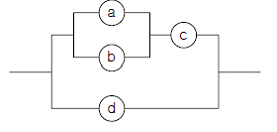
- {a,b}, {c,d}
- {a,c}, {b,d}
- {a,c,d}, {b,c,d}
- {a,b,d}, {c,d}
(정답률: 54%)
28. 인간과 기계는 상호 보완적인 기능을 담당하며 하나의 체계로서 임무를 수행한다. 다음 중 인간-기계 체계에 의해서 수행되는 기본 기능에 해당되지 않는 것은?
- 의사결정
- 정보보관
- 행동
- 감시
(정답률: 48%)
29. 그림의 고장 수목에서 FA=0.15, FB=0.2, FC=0.⑤ 이면, 정상사상 T가 발생할 확률은 얼마인가?
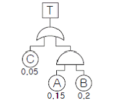
- 0.9215
- 0.0785
- 0.0485
- 0.0285
(정답률: 62%)
30. 주어진 그림에 대한 다음 설명 중 틀린 것은?
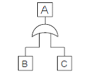
- RA = RB + RC
- B와 C가 동시에 발생해야 A가 발생한다.
- 그림참조는 OR를 나타낸다.
- 논리합의 경우이다.
(정답률: 56%)
31. 그림은 어느 기계 시스템의 각 신뢰도를 표시한 것이다. 이 시스템의 신뢰도 계산식이 올바른 것은?
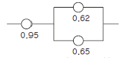
- 0.95 × {1 - (1 - 0.62)(1 - 0.65)}
- 0.95 × 0.62 × 0.65
- {(1 - 0.95) + (1 - 0.65) - 0.65}
- 0.95 × {(1 - 0.62)(1 - 0.65)}
(정답률: 70%)
32. 기계설비의 안전성 평가시 본질적인 안전을 진전시키기 위하여 조치해야 할 사항과 거리가 먼 것은?
- 재해를 분석하여 근로자의 안전작업 방법에 대한 교육을 강화
- 작업자측에 실수나 잘못이 있어도 기계설비측에서 이를 커버하여 안전을 확보할 것
- 작업방법, 작업속도, 작업자세 등을 작업자가 안전하게 작업할 수 있는 상태로 강구함
- 기계설비의 유압회로나 전기회로에 고장이 발생하거나 정전 등 이상상태 발생시 안전쪽으로 이행하도록 함
(정답률: 42%)
33. FTA에 의한 재해사례 연구순서 중 제1단계는?
- 사상의 재해 원인의 규명
- FT도의 작성
- 톱(TOP)사상의 선정
- 개선 계획의 작성
(정답률: 70%)
34. 1970년 이후 미국의 W. G. Johnson에 의해 개발된 최신 시스템 안전 프로그램으로서 원자력 산업의 고도 안전달 성을 위해 개발된 분석기법이다. 관리, 설계, 생산, 보전 등 광범위한 안전을 도모하기 위하여 개발된 분석 기법은?
- MORT
- DT
- ETA
- FTA
(정답률: 60%)
35. 일정한 고장률을 가진 어떤 기계의 고장률이 0.004/시간일 때 10시간 이내에 고장을 일으킬 확률은?
- 1 + e0.04
- 1 - e-0.004
- 1 - e0.04
- 1 - e-0.04
(정답률: 44%)
36. 산업안전표지에서 경고표지는 삼각형, 안내표지는 사각형, 지시표지는 원형 등으로 부호가 고안되어 있다. 이처럼 부호가 이미 고안되어 이를 사용자가 배워야 하는 부호는 다음 중 무엇이라 하는가?
- 묘사적 부호
- 추상적 부호
- 임의적 부호
- 사실적 부호
(정답률: 64%)
37. 눈과 물체의 거리가 28cm, 시선과 직각으로 측정한 물체의 크기가 0.03cm일 때 시각(분)은 얼마인가? (단, 시각은 600‘ 이하일 때이며, radian 단위를 분으로 환산하기 위한 상수값은 57.3과 60을 모두 적용하여 계산하도록 한다.)
- 0.007
- 0.001
- 3.68
- 24.55
(정답률: 49%)
38. 신체의 안정성을 증대시키는 조건이 아닌 것은?
- 모멘트의 균형을 고려한다.
- 몸의 무게중심을 낮춘다.
- 몸의 무게중심을 기저 내에 들게 한다.
- 기저를 작게 한다.
(정답률: 61%)
39. 다음 표시장치 중 동적 표시장치는?
- 도로표지판
- 도표
- 지도
- 고도계
(정답률: 70%)
40. 다음은 인간에러(Human Error)에 관한 설명이다. 틀린 것은?
- 생략오류(Omission Error) : 필요한 작업 또는 절차를 수행하지 않는데 기인한 에러
- 실행오류(Commission Error) : 필요한 작업 또는 절차의 수행지연으로 인한 에러
- 과잉행동오류(Extraneous Error) : 불필요한 작업 또는 절차를 수행함으로써 기인한 에러
- 순서오류(Sequential Error) : 필요한 작업 또는 절차의 순서 착오로 인한 에러
(정답률: 75%)
3과목: 기계위험방지기술
41. 보일러의 안전한 가동을 위하여 압력방출장치를 2개 설치한 경우에 올바른 작동 방법은?
- 최고사용압력 이상에서 2개 동시 작동
- 최고사용압력 이하에서 2개 동시 작동
- 최고사용압력 이하에서 1개가 작동되고, 다른 것은 최고 사용압력 1.⑤배 이하에서 작동
- 최고사용압력 이하에서 1개가 작동되고, 다른 것은 최고사용압력 1.03배 이하에서 작동
(정답률: 77%)
42. 압력용기의 자체검사 항목에 해당 되지 않는 것은?
- 압력용기 등의 본체의 상태
- 자동제어장치 기능의 이상유무
- 드레인 밸브의 조작과 배수상태
- 부속장치의 부식 및 균열 등의 이상유무
(정답률: 33%)
43. 절삭공구의 마모가 빨라지는 원인으로 가장 옳은 것은?
- 절삭온도가 높아질 때
- 절삭온도가 낮아질 때
- 절삭온도가 적당할 때
- 공작물의 경도가 낮을 때
(정답률: 75%)
44. 셰이퍼 작업의 안전 사항 설명 중 잘못된 것은?
- 반드시 재질에 따라 절삭속도를 정한다.
- 시동하기 전에 행정조정용 핸들을 빼 놓는다.
- 램은 가급적 행정을 길게 하는 편이 안전상 좋다.
- 바이트는 잘 갈아서 사용하며 가급적 짧게 물린다.
(정답률: 56%)
45. 프레스 작업시 양수조작식 방호장치에서 누름버튼 또는 조작레버의 상호간 내측 거리는?
- 300mm 이상
- 300mm 이하
- 250mm 이하
- 250mm 이상
(정답률: 55%)
46. 연삭기 작업시 안전상의 유의사항이다. 옳지 않은 것은?
- 연삭숫돌을 교체한 때는 1분 이상 시운전하고 이상 여부를 확인한다.
- 연삭숫돌의 최고사용 원주속도를 초과해서 사용하지 않는다.
- 탁상용 연삭기는 워크레스트와 조정편을 설치한다.
- 연삭숫돌의 상부를 사용하는 것을 목적으로 하는 탁상용 연삭기의 덮개 각도는 60° 이상으로 한다.
(정답률: 68%)
47. 기계설비의 안전조건 중 외관의 안전성을 향상시키는 조치는 어느 것인가?
- 전압강하ㆍ정전시의 오동작을 방지하기 위하여 자동제어장치를 하였다.
- 고장 발생을 최소화하기 위해 정기점검을 실시하였다.
- 강도의 열화를 생각하여 안전율을 최대로 고려하여 설계하였다.
- 작업자가 접촉할 우려가 있는 기계의 회전부를 덮개로 씌우고 안전색채를 사용하였다.
(정답률: 69%)
48. 프레스 작업에서 그림과 같이 용기의 가장자리를 잘라내는 작업명은?
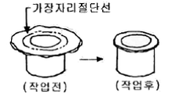
- 스웨이징(Swazing)
- 업셋팅(upsetting)
- 트리밍(Trimming)
- 슬리팅(Slitting)
(정답률: 50%)
49. 기계의 원동기, 회전축, 치차, 풀리, 플라이휠 및 벨트 등의 위험으로부터 작업자를 보호하기 위한 방지장치가 아닌 것은?
- 덮개
- 동력차단장치
- 슬리브
- 건널다리
(정답률: 45%)
50. 리프트(lift)에 반드시 갖추어야 할 방호장치는?
- 낙하방지장치
- 권과방지장치
- 수평유지장치
- 승강경보장치
(정답률: 55%)
51. 롤러(roller)안전장치의 하나인 손조작식 급정지장치에서 로프식의 위치로 가장 적당한 것은?
- 밑면으로부터 1.8m 이내
- 밑면으로부터 2.0m 이상
- 밑면으로부터 0.8m 이상, 1.1m 이내
- 밑면으로부터 0.4m 이상, 0.8m 이내
(정답률: 61%)
52. 재료에 대한 시험 중 비파괴시험이 아닌 것은?
- 방사선투과시험
- 자기탐상시험
- 초음파탐상시험
- 피로시험
(정답률: 71%)
53. 기계의 위험을 예방할 수 있는 일반적인 안전기준을 열거하였다. 틀린 것은?
- 회전축 등 동력전달장치에는 덮개나 건널다리 등을 설치한다.
- 회전축, 풀리 등에 부속되는 키, 핀 등의 기계요소는 묻힘형으로 한다.
- 벨트의 이음부분에는 돌출된 고정구를 사용하여야 한다.
- 건널다리에는 안전난간 및 미끄러지지 아니하는 구조의 발판을 설치하여야 한다.
(정답률: 74%)
54. 목재가공용 둥근톱 작업에서 반발예방장치가 아닌 것은?
- 반발방지기구(finger)
- 반발방지롤(roll)
- 분할날
- 립소(rip saws)
(정답률: 62%)
55. 용접장치에 사용되는 가스 장치실의 구조에 대한 설명 중 틀린 것은?
- 벽의 재료는 불연성의 재료를 사용할 것
- 천정과 벽은 견고한 콘크리트 구조일 것
- 가스누출시 해당 가스가 정체되지 않도록 할 것
- 지붕 및 천정의 재료는 가벼운 불연성의 재료를 사용 할 것
(정답률: 71%)
56. 산업안전기준규칙에 따르면 프레스 등에는 금형의 안전작업을 위하여 안전블록을 사용해야 한다. 이에 해당되지 않는 것은?
- 금형의 수리작업
- 금형의 조정작업
- 금형의 부착작업
- 금형의 해체작업
(정답률: 46%)
57. 그림과 같이 500kg의 중량물을 와이어로프로 상부60°의 각으로 들어 올릴 때, 로프 한 선에 걸리는 하중(T')은?
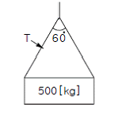
- 168.49kg
- 248.58kg
- 288.67kg
- 378.79kg
(정답률: 52%)
58. 지게차로 20km/h의 속도로 주행할 경우, 좌우 안정도는 얼마인가?
- 37%
- 39%
- 41%
- 43%
(정답률: 59%)
59. 와이어로프의 안전율을 계산하는 공식은? (단, S=안전율,Q=달기하중, N=로프의 가닥수, P=로프의 파단력)
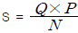
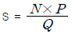
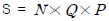
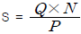
(정답률: 66%)
60. 진동장애의 예방대책과 가장 거리가 먼 것은?
- 저진동공구를 사용한다.
- 진동업무를 자동화한다.
- 방진장갑 등 진동보호구를 착용한다.
- 실외작업을 한다.
(정답률: 66%)
4과목: 전기위험방지기술
61. 누전경보기가 정상으로 설치되어 있는 경우 누설전류설정치 이상의 누설전류가 흐르면 경보를 발하지만, 누설전류가 흐르지 않는데도 경보를 발하는 경우의 원인으로 생각되지 않는 것은?
- 접지선이 2개소 설치되어 있는 경우
- 고주파가 발생되는 부근에 설치되어 있어서 전기적 유도가 발생하고 있다고 생각되는 경우
- 변류기의 2차측 배선이 단선해서 지락이 발생하고 있다고 생각되는 경우
- 변류기의 2차측 배선의 절연상태가 나쁜 경우
(정답률: 44%)
62. 교류 아크 용접작업시에 감전방지를 위한 안전대책과 가장 관계가 먼 것은?
- 전원측에 누전차단기 설치
- 용접기의 외함 접지
- 자동전격 방지장치 부착
- 절연용 방호구 사용
(정답률: 40%)
63. 피뢰침의 제한 전압이 800kV, 충격절연강도가 1,260kV라 할 때, 보호여유도는 몇 %인가?
- 33.33
- 47.33
- 57.5
- 63.5
(정답률: 49%)
64. 교류아크 용접기의 자동전격 방지장치란 용접기의 2차 전압을 25V이하로 자동조절하여 안전을 도모하려는 것이다. 다음 사항 중 어떤 시점에서 그 기능이 발휘되는가?
- 용접작업을 진행하고 있는 동안만
- 용접작업 중단 직후부터 다음 아크 발생시까지
- 전체 작업시간 동안
- 아크를 발생시킬 때만
(정답률: 64%)
65. 다음 중 방폭 구조의 종류가 아닌 것은?
- 유압 방폭구조
- 내압 방폭구조
- 본질안전 방폭구조
- 압력 방폭구조
(정답률: 59%)
66. 고압 및 특별고압의 전로에 시설하는 피뢰기에 접지공사를 할 때 접지저항은 몇 Ω 이하이어야 하는가?
- 10
- 20
- 100
- 150
(정답률: 67%)
67. 인화성 액체의 증기 또는 인화성 가스에 의한 폭발위험이 지속적으로 또는 장기간 존재하는 장소는?
- 0종 장소
- 1종 장소
- 2종 장소
- 준위험 장소
(정답률: 54%)
68. 고압의 충전전로에 접근하여 작업할 때 작업자에 위험이 있어 휴전토록 하여야 하나, 휴전을 시키지 않고 작업을 할 때는 안전을 위한 최소거리가 확보되어 져야한다. 확보 조건으로 틀린 것은?
- 작업자의 머리에서 30cm
- 신체 오른쪽 측면에서 60cm
- 작업자의 발 아래에서 60cm
- 신체의 왼쪽 측면에서 50cm
(정답률: 54%)
69. 보호구 성능검정규정에서 내전압용 안전장갑의 신장율은 몇 %이상 이어야 하는가?
- 300%
- 500%
- 600%
- 700%
(정답률: 44%)
70. 인체가 전기설비에 접촉되어 감전재해가 발생하였을 때 감전피해의 위험도에 가장 큰 영향을 미치는 요인은?
- 통전전류의 크기
- 통전시간
- 통전경로
- 전원의 종류
(정답률: 63%)
71. 다음 설명과 가장 관계가 깊은 것은?
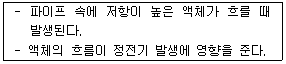
- 유동대전
- 박리대전
- 충돌대전
- 분출대전
(정답률: 72%)
72. 정전 작업시 전원개폐기를 개방하고 검전기로 전선로를 검전하였더니 네온램프에 불이 점등되었다. 그 원인으로 생각되는 것은?
- 유도전압이 발생되었다.
- 검전기가 고장이다.
- 단락접지를 하였다.
- 작업 지휘자가 없었다.
(정답률: 67%)
73. 인체의 전격시의 통전시간이 4초 일 때 심실세동전류를 Dalziel 이 주장한 식으로 계산하면 얼마이겠는가?
- 53mA
- 82.5mA
- 102.5mA
- 143mA
(정답률: 55%)
74. 충전전로의 사용전압이 22.9kV 인 경우 근로자의 신체와 충전전로의 접근 한계거리는 몇 cm 이상인가?
- 90
- 110
- 130
- 150
(정답률: 48%)
75. 어떤 공장에서 전기설비에 관한 절연상태를 측정한 결과가 다음과 같이 나왔다. 절연불량 상태는 어느 것인가?
- 사무실의 110V 전등회로의 절연저항값이 0.14㏁이었다.
- 전동기 전용 220V 분기개폐기의 절연저항값이 0.2㏁이었다.
- 사용전압 및 용량이 440V, 300kW의 고주파 유도 가열기 전로의 절연저항값이 0.3㏁ 이었다.
- 40W, 100V의 형광등 회로의 절연저항값이 0.2㏁이었다.
(정답률: 57%)
76. 스파크 화재의 방지책이 아닌 것은?
- 개폐기를 불연성의 외함 내에 내장시킬 것
- 통형퓨즈를 사용할 것
- 유입개폐기는 절연유의 열화 정도와 유량에 주의하고, 유입개폐기 주위에 내화벽을 설치할 것
- 배선 코드의 용량은 충분한 것을 사용하여 과열을 방지할 것
(정답률: 25%)
77. 감전에 의해 호흡이 정지한 후에 인공호흡을 즉시 실시하면 소생할 수 있는데, 감전에 의한 호흡 정지 후 1분 이내에 올바른 방법으로 인공호흡을 실시하였을 경우의 소생률은 약 몇 %인가?
- 50%
- 60%
- 75%
- 95%
(정답률: 70%)
78. 정전기 재해방지에 관한 설명 중 잘못된 것은?
- 가솔린이나 벤젠의 수송 과정에서 유속을 2.5m/초 이상으로 한다.
- 포장 과정에서 용기를 도전성 재료에 접지한다.
- 인쇄 과정에서 도포량을 적게 하고 접지한다.
- 작업장의 습도를 높여 전하가 제거되기 쉽게 한다.
(정답률: 55%)
79. 정전기로 인한 발화의 예방법이 아닌 것은?
- 정전기의 발생 방지조치
- 대전 방지 조치
- 공기 조절조치
- 공기 이온화 조치
(정답률: 53%)
80. 교류 아크용접기의 사용에서 무부하 전압이 80V, 아크전압 25V, 아크 전류 300A일 경우 효율은 약 몇 %인가? (단, 내부손실은 4kW임)
- 65
- 68
- 70
- 72
(정답률: 32%)
5과목: 화학설비위험방지기술
81. 가연성 기체의 폭발한계와 폭굉한계를 바르게 설명한 것은?
- 폭발한계와 폭굉한계는 농도 범위가 같다.
- 폭발한계는 폭굉한계보다 농도범위가 좁다.
- 폭발한계는 폭굉한계보다 농도범위가 넓다.
- 두 한계의 하한계는 같으나 상한계는 폭굉한계가 더 높다.
(정답률: 43%)
82. 화학공장의 폐회로방식 제어계의 작동 순서로서 올바른 것은?
- 공정설비 → 검출부 → 조작부 → 조절계 → 공정설비
- 공정설비 → 검출부 → 조절계 → 조작부 → 공정설비
- 공정설비 → 조작부 → 검출부 → 조절계 → 공정설비
- 공정설비 → 조작부 → 조절계 → 검출부 → 공정설비
(정답률: 43%)
83. 다음 중 축류식 압축기에 대한 설명은?
- Casing내에 1개 또는 수 개의 특수피스톤을 설치하여 이것을 회전시킬 때 Casing과 피스톤 사이의 체적이 감소해서 기체를 압축하는 것이다.
- 실린더 내에서 피스톤을 왕복시켜 이것에 따라 개폐하는 흡입밸브 및 배기밸브의 작용에 의해 기체를 압축하는 것이다.
- Casing내에 넣어진 날개바퀴를 회전시켜 기체에 작용하는 원심력에 의해서 기체를 압송하는 것이다.
- 프로펠러의 회전에 의한 추진력에 의해 기체를 압송하는 것이다.
(정답률: 49%)
84. 최소 발화에너지에 대한 설명 중 잘못된 것은?
- 일반적으로 분진의 최소 발화에너지는 가연성가스보다 큰 에너지를 준위를 가진다.
- 온도의 변화에 따라 최소 발화에너지는 변한다.
- 유속이 커지면 발화에너지는 적어진다.
- 압력이 증가하면 발화에너지는 감소한다.
(정답률: 36%)
85. 공기 중 최소 발화에너지 값이 가장 적은 물질은?
- CH2=CH2
- CH2=CHCH3
- CH4
- C2H6
(정답률: 40%)
86. 다음 짝지어진 물질이 혼합시 위험성이 가장 낮은 것은?
- 고체산화성물질 - 고체환원성물질
- 고체환원성물질 - 가연성물질
- 물반응성물질 - 고체환원성물질
- 폭발성물질 - 금수성물질
(정답률: 38%)
87. 유류화재는 어떤 종류(급수)의 화재에 해당되는가?
- A급
- B급
- C급
- F급
(정답률: 70%)
88. 상온에서 물과 격렬히 반응하여 수소를 발생시키는 물질은?
- Zn
- Na
- Fe
- Ag
(정답률: 61%)
89. 공기 중에서 증발하는 화합물의 흡입에 의한 치사농도로서 실험동물의 50%를 치사시키는 양을 나타내는 기호는?
- LD50
- MLD50
- LC50
- MLC50
(정답률: 42%)
90. 열교환기의 구조에 의한 분류 중 다관식 열교환기에 해당하지 않는 것은?
- 이중관식 열교환기
- 고정관판식 열교환기
- 유동관판식 열교환기
- U형관식 열교환기
(정답률: 34%)
91. 아세틸렌 제조 설비의 고압 건조기와 충전용 교체밸브 사이에 설치해야 하는 장치는?
- 역화방지장치
- 긴급차단장치
- 경보장치
- 기화방지장치
(정답률: 48%)
92. 화학변화에 의한 에너지 증가 및 물리적 상태의 변화에 의한 압력증가를 제어하기 위해 부착하는 것은?
- 체크밸브
- 스팀 드래프트
- 자동경보장치
- 안전밸브
(정답률: 63%)
93. 다음 중 반응기의 구조방식에 의한 분류에 해당하는 것은?
- 연속식 반응기
- 유동층형 반응기
- 반회분식 반응기
- 회분식 균일상반응기
(정답률: 45%)
94. 결정수를 함유하는 물질이 공기 중에 결정수를 잃는 현상을 무엇이라 하는가?
- 풍해성
- 산화성
- 부식성
- 조해성
(정답률: 31%)
95. 다음 물질 중 수분(H2O)과 반응하여 유독성 가스인 포스핀이 발생되는 물질은?
- 금속나트륨
- 알루미늄 분말
- 인화칼슘
- 수소화리튬
(정답률: 51%)
96. 산업안전보건법에서의 인화성가스의 정의를 바르게 설명한 것은?
- 폭발한계 농도의 하한이 5%이하, 또는 상하한의 차가 10%이상인 것으로서 1기압 25℃에서 가스상태인 물질
- 폭발한계 농도의 하한이 10%이하, 또는 상하한의 차가 10%이상인 것으로서 1기압 25℃에서 가스상태인 물질
- 폭발한계 농도의 하한이 10%이하, 또는 상하한의 차가 20%이상인 것으로서 1기압 35℃에서 가스상태인 물질
- 폭발한계농도의 하한이 15%이하, 또는 상하한의 차가 30%이상인 것으로서 1기압 35℃에서 가스상태인 물질
(정답률: 35%)
97. 작업자가 밀폐공간에 들어가기 전 조치해야 할 사항이 아닌 것은?
- 감시인을 배치한다.
- 잠재위험요인에 대해 파악한다.
- 내부가 어두운 경우 비방폭전등을 이용한다.
- 밀폐공간을 충분히 환기시킨다.
(정답률: 58%)
98. 다음 중 Halon 2402의 화학식으로 맞는 표현은?
- C2I4Br2
- C2F4Br2
- C2Cl4Br2
- C2I4Cl2
(정답률: 64%)
99. 유해인자의 분류기준 중 고독성물질의 경구투여시 LD50 의 기준은?
- 25㎎/㎏
- 50㎎/㎏
- 100㎎/㎏
- 300㎎/㎏
(정답률: 28%)
100. 산업안전보건법에서 정한 공정안전보고서 제출대상 업종이 아닌 사업장으로서 위험물질의 1일 취급량이 염소 10,000㎏, 수소 20,000㎏, 프로판 1,000㎏, 톨루엔 2,000㎏인 경우 공정안전보고서 제출대상 여부를 판단하기 위한 R값은 얼마인가? (단, 유해ㆍ위험물질의 규정수량은[표]를 참고하여 계산한다.)
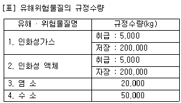
- 1.2
- 1.5
- 2.1
- 2.5
(정답률: 51%)
6과목: 건설안전기술
101. 다음 중 가설통로의 설치기준으로 잘못 된 것은?
- 수직갱에 가설된 통로의 길이가 15m 이상일 경우에는 15m 이내 마다 계단참을 설치 할 것
- 경사가 15°를 초과하는 때에는 미끄러지지 아니하는 구조로 할 것
- 높이 8m 이상인 비계다리에는 7m 이내마다 계단참을 설치할 것
- 추락의 위험이 있는 장소에는 안전난간을 설치 할 것
(정답률: 66%)
102. 달비계란 와이어로프, 강재 등으로 상부지점에서 작업용 널판을 매다는 형식의 비계를 말한다. 이러한 달비계에 설치하는 작업발판 폭은 얼마 이상을 기준으로 하는가?
- 30cm
- 40cm
- 50cm
- 60cm
(정답률: 61%)
103. 아래의 와이어로프 중 양중기에 사용할 수 있는 것은?
- 와이어로프의 한 꼬임(스트랜드)에서 끊어진 소선의수가 8%인 것
- 지름의 감소가 공칭지름의 8%인 것
- 심하게 부식된 것
- 이음매가 있는 것
(정답률: 63%)
104. 근로자의 추락에 의한 위험을 방지하기 위하여 안전난간을 설치하는 때 상부난간대는 바닥면ㆍ발판 또는 경사로의 표면으로부터 어느 정도의 높이에 설치하여야 하는가?
- 30cm 이상 60cm 이하
- 60cm 이상 90cm 이하
- 90cm 이상 120cm 이하
- 120cm 이상 150cm 이하
(정답률: 52%)
1⑤. 산업안전기준에 관한 규칙에서 규정하는 철골작업의 작업중지 기후조건이 아닌 것은?
- 풍속이 초당 10미터 이상인 경우
- 강우량이 시간당 1밀리미터 이상인 경우
- 강설량이 시간당 1센티미터 이상인 경우
- 기온이 영하 10도 이하인 경우
(정답률: 65%)
106. 인력운반 작업에 대한 안전사항으로 가장 거리가 먼 내용은?
- 보조기구를 효과적으로 사용한다.
- 긴 물건은 뒤쪽으로 높이고 원통인 물건은 굴려서 운반한다.
- 물건을 들어올릴 때는 팔과 무릎을 이용하며 척추는 곧게 한다.
- 무거운 물건은 공동작업으로 실시한다.
(정답률: 71%)
107. 최고 51m높이의 강관비계를 세우려고 한다. 지상에서 몇 미터(m)까지를 2본으로 세워야 하는가?
- 10m
- 20m
- 31m
- 51m
(정답률: 48%)
108. 터널 굴착공사에서 뿜어 붙이기 콘크리트의 효과를 설명한 것으로 가장 거리가 먼 것은?
- 굴착면을 덮음으로써 지반의 침식을 방지한다.
- 굴착면의 요철을 줄이고 응력집중을 증대시킨다.
- Rock Bolt의 힘을 지반에 분산시켜 전달한다.
- 암반의 크랙(Crack)을 보강한다.
(정답률: 49%)
109. 다음 중 계측기의 설치 목적에 맞지 않은 것은?
- 지표침하계 : 지표면의 침하량 변화 측정
- 간극수압계 : 지반 내 지하수위 변화 측정
- 변위계 : 토류 구조물의 각 부재와 콘크리트 등의 응력변화 측정
- 하중계 : 버팀보 어스앵커(Earth anchor) 등의 실제 축하중 변화 측정
(정답률: 43%)
110. 다음 중 강말뚝의 특징으로 틀린 것은?
- 허용응력이 크다.
- 내부식성이 크다.
- 말뚝길이에 비교적 제한을 받지 않는다.
- 굳은 지층에도 관입시킬 수 있다.
(정답률: 52%)
111. 다음 다짐기계 중 철재 원통에 다수의 돌기를 붙여 접지면적을 작게 하여 접지압을 증가시킨 롤러로서, 깊은 다짐이나 고함수비 지반의 다짐에 많이 이용하여, 흙의 혼합 효과가 발생하므로 점성토지반에 적합한 것은?
- 탬핑롤러
- 타이어롤러
- 진동롤러
- 탠덤롤러
(정답률: 66%)
112. 비계에서 벽 고정을 하고 기둥과 기둥을 수평재(띠장)나 가새로 연결하는 가장 큰 이유는?
- 작업자의 추락재해를 방지하기 위해
- 인장파괴를 방지하기 위해
- 좌굴을 방지하기 위해
- 해체를 용이하게 하기 위해
(정답률: 51%)
113. 높이 2m 이상의 작업발판 끝이나 개구부 부근에서 작업 중 추락재해가 발생하였다면 이를 예방할 수 있는 조치 사항으로서 적당하지 않는 것은?
- 방호울이나 안전난간을 설치하여야 한다.
- 개구부에 덮개를 설치하고 고정하여야 한다.
- 안전방망을 치거나 안전대를 착용하도록 한다.
- 승강 설비를 설치하도록 한다.
(정답률: 57%)
114. 양중작업에 사용되는 와이어로프의 안전계수에 관한 사항 중 옳지 않은 것은?
- 와이어로프의 안전계수는 그 절단하중의 값을 와이어로프에 걸리는 하중의 평균값으로 나눈 값이다.
- 근로자가 탑승하는 운반구를 지지하는 경우의 안전계수는 10 이상이어야 한다.
- 화물의 하중을 직접 지지하는 경우의 안전계수는 5이상 이어야 한다.
- 근로자가 탑승하는 운반구를 지지하거나 화물의 하중을 직접 지지하는 경우 외의 와이어로프 안전계수는 4 이상 이어야 한다.
(정답률: 32%)
115. 그림과 같이 인장력 T=55,000kgf을 받는 두 개의 판에 체결해야 할 허용전단응력이 τa=1125kgf/cm2인 M22(직경 22mm) 볼트의 최소 개수는?
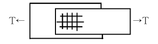
- 5개
- 10개
- 13개
- 16개
(정답률: 38%)
116. 터널굴착 작업시 시공계획에 포함해야 할 사항으로 가장 거리가 먼 것은?
- 지질조사 방법
- 터널지보공 및 복공의 시공방법
- 용수처리 방법
- 환기 또는 조명 시설을 하는 때에는 그 방법
(정답률: 25%)
117. 가설계단 및 계단참을 설치하는 때에는 매 m2 당 몇kg 이상의 하중에 견딜 수 있는 강도를 가진 구조로 설치하여야 하는가?
- 200㎏
- 300㎏
- 400㎏
- 500㎏
(정답률: 44%)
118. 옥외에 설치되어 있는 주행 크레인은 순간 풍속이 얼마 이상일 때 이탈방지장치를 작동시키는 등 이탈을 방지하기 위한 조치를 해야 하는가?
- 순간풍속이 매 초당 5m 초과시
- 순간풍속이 매 초당 10m 초과시
- 순간풍속이 매 초당 20m 초과시
- 순간풍속이 매 초당 30m 초과시
(정답률: 57%)
119. 사용 중인 구조물의 안전진단방법으로 가장 거리가 먼 것은?
- 초음파 검사법
- 탄성파법
- 베인테스트법
- 레이다법
(정답률: 46%)
120. 지반의 보일링(boiling)현상의 직접적인 원인은 어느 것인가?
- 굴착부와 배면부의 지하수위의 수두차
- 굴착부와 배면부의 흙의 중량차
- 굴착부와 배면부의 흙의 함수비차
- 굴착부와 배면부의 흙의 토압차
(정답률: 58%)